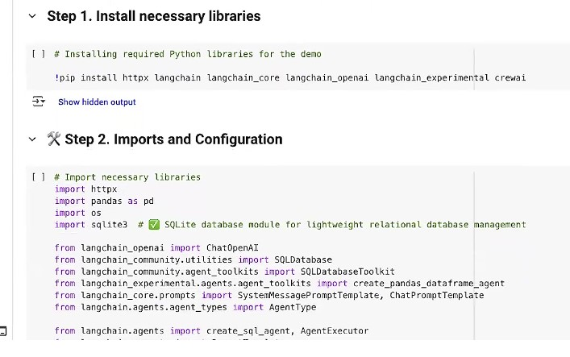
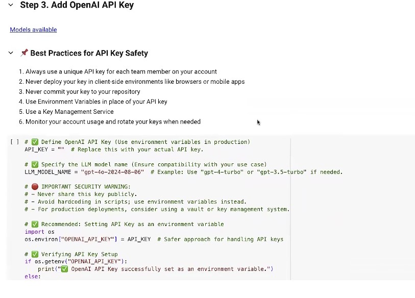
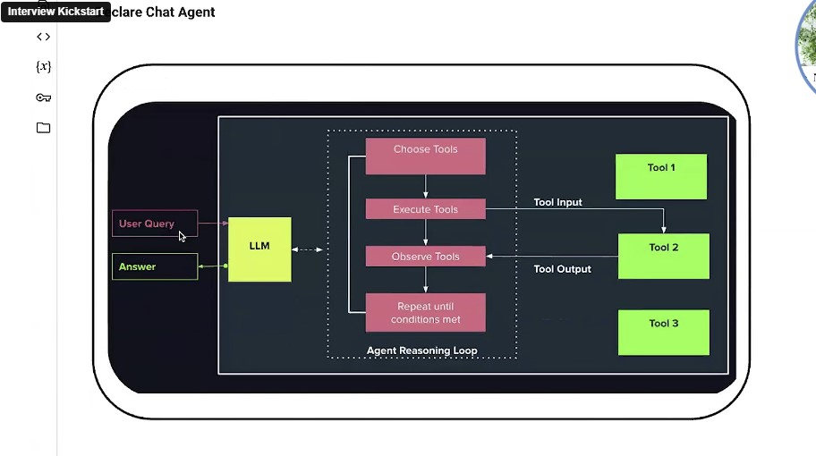

Here's a Breakdown of the Tools and Libraries You'll Need

Step 1. Install Necessary Libraries
These are the libraries you'll need to install in your Python environment. The command !pip install ... is used for this.
- httpx: A fast, modern HTTP client for Python. You'll likely use this for making requests to web services or APIs.
- langchain: The core library for building applications with large language models. It provides the framework for chaining together different LLM components.
Example: from langchain.llms import OpenAI\nlm = OpenAI() creates an OpenAI language model instance for use in your application.
- langchain_core: Contains core abstractions and components used across LangChain, ensuring modularity and reusability.
- langchain_openai: Provides specific integrations for OpenAI's language models (like ChatGPT, GPT-4), allowing your LangChain application to use them.
- langchain_experimental: Contains newer or experimental features for LangChain agents or other functionalities.
- crewai: CrewAI is a framework designed for orchestrating role-playing autonomous AI agents.
- RAG (Retrieval-Augmented Generation): A technique that combines the power of large language models with external knowledge sources. The AI retrieves relevant information from databases or documents and uses it to generate more accurate and up-to-date responses.
- MLOps: The practice of automating and managing the lifecycle of machine learning models, from development to deployment and monitoring. MLOps ensures reliable, scalable, and efficient AI operations.
- Amazon SageMaker: A cloud platform from AWS for building, training, and deploying machine learning models at scale. It provides tools for data preparation, model training, and production deployment.
- Vector DBs: Specialized databases designed to store and search data as vectors (numerical representations). They are essential for similarity search, semantic search, and retrieval-augmented generation in AI applications.
- Semantic Search: A search technique that understands the meaning and context of queries, not just keywords. It enables AI systems to find more relevant and accurate information by comparing the semantic similarity of queries and data.
- Prompt Engineering: The process of designing and refining prompts to guide large language models in generating desired outputs. Effective prompt engineering improves the quality, relevance, and safety of AI responses.
- Azure OpenAI: Microsoft's cloud-based service that provides access to OpenAI's powerful language models (like GPT-4) through the Azure platform, enabling secure and scalable AI integration for enterprise applications.
- TensorFlow: An open-source platform developed by Google for building and training machine learning and deep learning models. It's widely used for AI projects, especially those involving neural networks.
- Context Management: The methods and tools used to track, store, and utilize relevant information (context) throughout an AI system's operation. Good context management helps AI agents maintain coherent conversations and make better decisions.
Step 2. Imports and Configuration
These are the specific modules and classes you'll import from the installed libraries to use in your code.
Standard Python Libraries:
- httpx: (Already mentioned above) For HTTP requests.
- pandas as pd: A powerful Python library for data manipulation and analysis. Pandas makes it easy to clean, transform, and explore data, especially using DataFrames—which are like tables or spreadsheets in Python. It's widely used for tasks such as loading data from files, filtering and grouping data, handling missing values, and preparing data for machine learning or visualization.
- os: Provides a way of using operating system dependent functionality, like interacting with file paths or environment variables (e.g., for API keys).
- sqlite3: Python's built-in module for working with SQLite databases. This is used for lightweight, file-based relational database management.
LangChain Specific Imports:
- from langchain_openai import ChatOpenAI: To interact with OpenAI's chat models.
- from langchain_community.utilities import SQLDatabase: Likely for connecting to and interacting with SQL databases (like the sqlite3 one).
- from langchain_community.agent_toolkits import SQLDatabaseToolkit: A set of tools specifically designed for LangChain agents to interact with SQL databases, allowing the AI to query databases.
- from langchain_experimental.agents.agent_toolkits import create_pandas_dataframe_agent: A specialized agent toolkit that allows an AI agent to work with and analyze pandas DataFrames.
- from langchain_core.prompts import SystemMessagePromptTemplate, ChatPromptTemplate: For creating and managing prompts that guide the behavior of the LLMs and agents. SystemMessagePromptTemplate sets the overall persona or instructions for the AI, while ChatPromptTemplate structures the conversational turns.
- from langchain.agents.agent_types import AgentType: Used to specify the type of AI agent you are creating (e.g., which underlying model or method it uses).
- from langchain.agents import create_sql_agent, AgentExecutor: create_sql_agent is a function to create an AI agent specifically designed to interact with SQL databases. AgentExecutor is the core component that runs the LangChain agent, managing the execution of its thoughts, actions, and observations.
In summary, for this lab, you'll be setting up an environment to:
- Communicate over HTTP.
- Perform data analysis using pandas.
- Interact with a SQLite database.
- Most importantly, build and run intelligent AI agents using the LangChain framework, specifically allowing them to query databases (SQLDatabaseToolkit, create_sql_agent) and analyze dataframes (create_pandas_dataframe_agent), all powered by OpenAI's language models (ChatOpenAI) and guided by structured prompts.
Step 3. Add OpenAI API Key

This section is all about setting up the crucial key that allows your AI system to communicate with OpenAI's powerful language models (like GPT-4, GPT-3.5, etc., as mentioned in the first diagram's "LLM Models" section). Without this key, your AI agent wouldn't be able to generate human-like text or perform many of its advanced functions.
Best Practices for API Key Safety
- API keys are like passwords; they grant access to paid services and powerful AI, so they must be protected.
- Never embed your API key directly in your code. Avoid hardcoding in scripts.
- Use unique keys for each team member.
- Never deploy keys in client-side environments (browsers, mobile apps).
- Use Environment Variables (the preferred method shown in the code example below).
- Use a Key Management Service for production.
- Monitor usage and regularly rotate keys.
The code snippet below demonstrates how to define and securely set up this API key using an environment variable, which is a safer approach than directly pasting the key into the code. It also shows how to specify which OpenAI model (gpt-4o-2024-08-06 in the example) the system should use.
import os
# Set your OpenAI API key as an environment variable (recommended)
os.environ["OPENAI_API_KEY"] = "your-openai-api-key-here" # Never hardcode in production!
# Specify the OpenAI model to use
default_model = "gpt-4o-2024-08-06"
Agentic AI System: Architecture & Reasoning Loop

- User Query: This is the initial question or prompt provided by a user, serving as the starting point for the chat agent's processing. It tells the agent what information is needed or what task needs to be performed.
- LLM (Large Language Model): The LLM is the core intelligence of the chat agent, responsible for understanding the user's intent and generating coherent responses. It acts as the central orchestrator, deciding how to fulfill the user query, including when to interact with external tools.
- Agent Reasoning Loop: This iterative process allows the LLM to dynamically interact with various tools to achieve a complete and accurate answer. It involves a cycle of choosing, executing, and observing tools until the desired conditions are met.
- Choose Tools: In this step, the LLM determines which external functionalities or resources are relevant and necessary to address the user's query. This decision is based on the LLM's understanding of the query and the capabilities of the available tools.
- Execute Tools: Once tools are chosen, this phase involves invoking them with specific inputs to perform actions or retrieve information. The LLM provides the necessary data for the tools to operate effectively.
- Observe Tools: After a tool has been executed, the LLM receives and analyzes its output. This observation helps the LLM understand the results of the tool's operation and decide on the next steps in the reasoning loop.
- Repeat until conditions met: This signifies the iterative nature of the reasoning loop, where the cycle of choosing, executing, and observing tools continues until the LLM has gathered all necessary information or completed the required actions. It ensures the agent can handle complex queries that require multiple steps or external interactions.
- Tool Input: This refers to the data or parameters that the LLM provides to an external tool when it's being executed. It guides the tool in performing its specific function relevant to the user's query.
- Tool Output: This is the result or information returned by an external tool after it has been executed. The LLM uses this output to inform its further reasoning and to formulate the final answer.
- Tool 1, Tool 2, Tool 3 (Generic Tools): These represent various external functionalities or databases that the LLM can access to extend its capabilities beyond its pre-trained knowledge. Examples include search engines, calculators, APIs, or specialized knowledge bases, allowing the agent to perform diverse tasks.
- Answer: This is the final, synthesized response generated by the LLM and presented to the user. It represents the culmination of the agent's understanding, reasoning, and interaction with tools to address the initial user query.